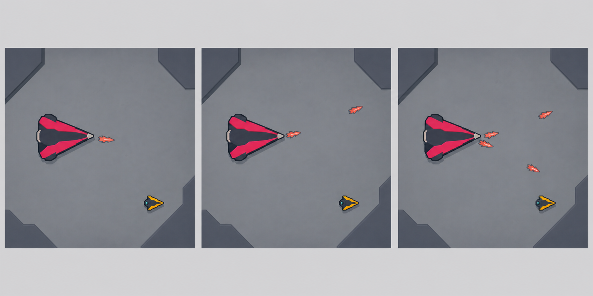

Stage 1 · Foundry Colossus
순차 각도 스윕 / 역스윕
angular_sweep · 기존 제안명 angular_coil 수정수정 채택 · 직선탄만 사용

보스가 조준 기준각을 한 번 고정한 뒤 탄환을 한 발씩 발사한다. 첫 절반은 발사각을 일정하게 증가시키고, 나머지 절반은 증가 방향을 뒤집는다. 개별 탄환은 처음 받은 직선 속도를 끝까지 유지한다. 곡선 코일처럼 보이는 잔상은 설계 목표가 아니며, 플레이어는 발사기 각도의 다음 단계를 읽는다.
- 1 · 준비플레이어의 예측 위치로 기준각을 한 번 고정한다.
- 2 · 스윕0.08초 간격으로 한 발씩, 발사기에만 각도 증분을 적용해 12발을 쏜다.
- 3 · 역스윕중간부터 각도 증분의 부호를 바꿔 직선탄 사이의 빈 축을 반대 방향으로 이동시킨다.
기존
fan과의 차이
다섯 발을 동시에 같은 각도로 반복하지 않는다. 플레이어는 고정 부채꼴의 틈이 아니라 한 발씩 이동하는 직선 발사축과 다음 스윕 방향을 읽는다.
| 초기 튜닝 | 준비 0.85초 · 발사 0.96초 · 회복 0.90초 |
|---|---|
| 최대 탄환 | 12발 · 한 번에 한 발 생성 |
| 이동 법칙 | 각 탄환은 직선 · 발사기 각도만 순차 변경 |
| 표적 규칙 | 준비 종료 시 한 번 고정 · 이후 추적 없음 |
| 회피 핵심 | 다음 발사각이 지나갈 쪽을 먼저 비우고 역스윕 전에 축을 교차 |